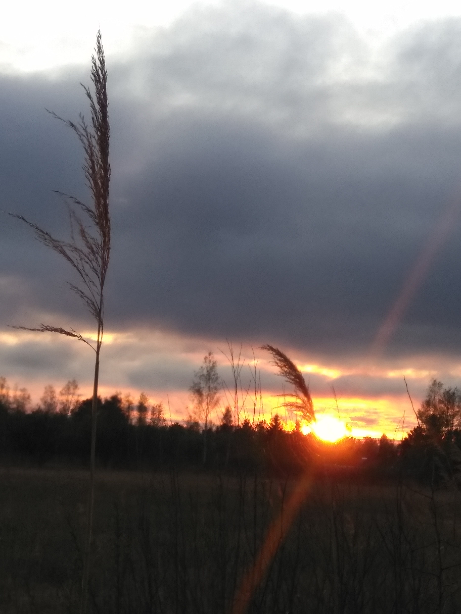
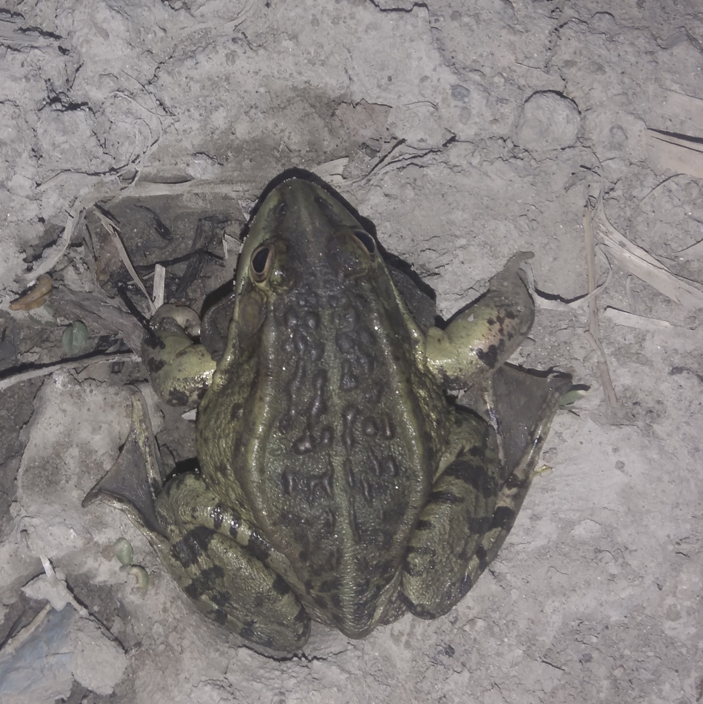
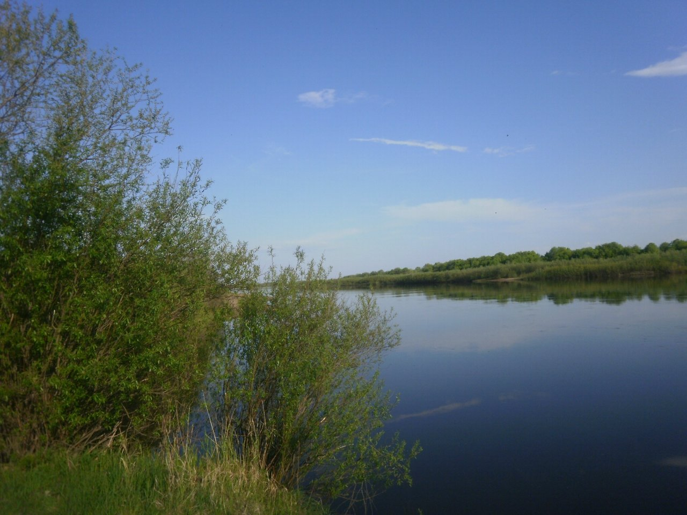

Что Вас ожидает
Предлагаем Вашему вниманию цикл рассказов "Истории у костра". Здесь будут публиковаться истории из жизни, рассказы об удивительной природе, познавательные статьи, забавные фото и немного юмора.
 Коротко об авторе
Светлана Галиновна родилась в деревушке, на берегу маленькой реки. С детства её окружала природа и простой деревенский быт. В школьные годы ей пришлось сменить деревенский уклад на городской и избавиться от просторечия. Годы быстро сменяли друг друга, институт, работа не по специальности, магистратура и опять работа не по специальности. В целом наш автор жив и здоров, работает наслаждаясь каждым мгновением своей жизни.
